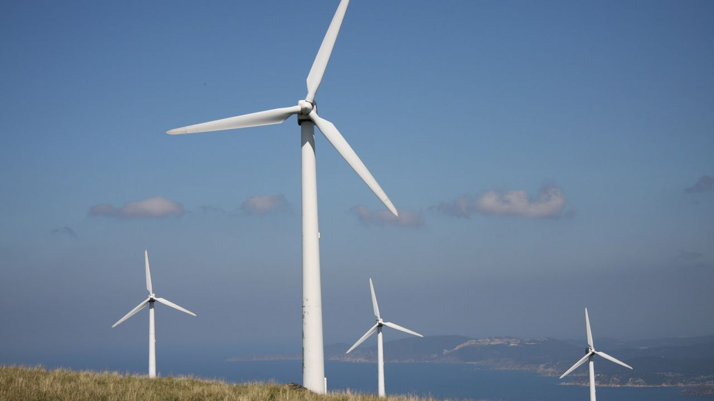
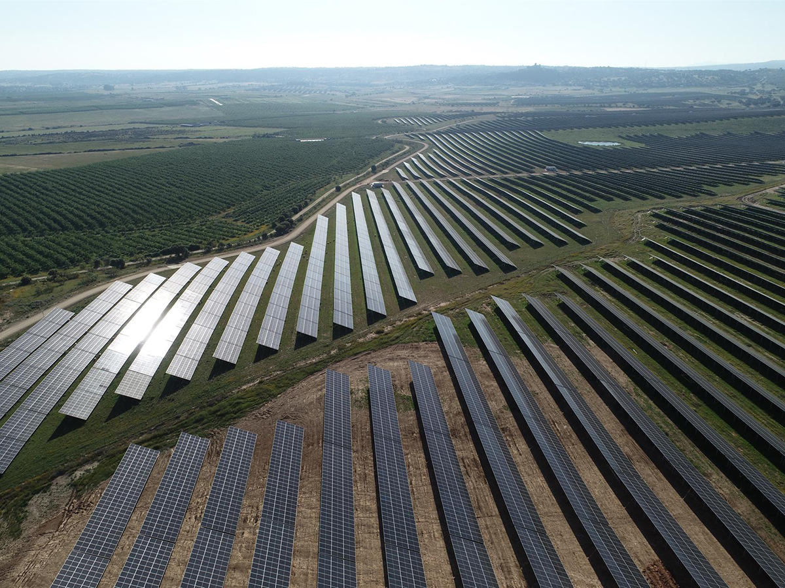
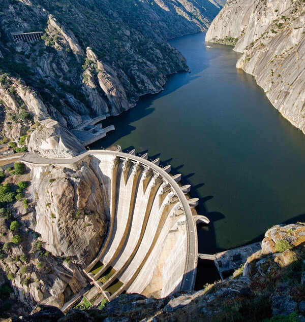

Analisis de los criterios ASG
Ambientales (A)



- Energias renovables: Invierte en parques eólicos, solares e instalaciones hidroeléctricas para producir electricidad con menos emisiones.
- Reduccion de emisiones Busca reducir su huella de carbono y aumentar la producción de electricidad procedente de fuentes limpias. En 2025, el 85 % de su capacidad instalada estaba libre de emisiones.
- Protección del medio ambiente: Desarrolla iniciativas para proteger la biodiversidad y reducir el impacto de sus instalaciones sobre los ecosistemas naturales.